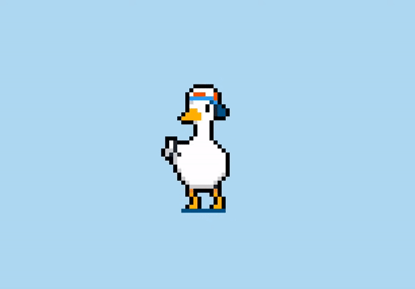

Pato Dançante
O pato dançarino possui uma série de poderes e habilidades que o tornam um
combatente formidável. Com sua agilidade e graça, ele pode executar movimentos como o "Twist and Quack",
que atordoa seus inimigos próximos, ou o "Feather Shuffle", que envia uma onda de penas para causar
danos moderados. Além disso, o pato também possui habilidades defensivas, como o "Duck and Dodge", que
permite que ele faça esquivas rápidas e elegantes para desviar de ataques inimigos, e o "Lucky Duck",
que aumenta sua velocidade e precisão para acertar golpes críticos com maior frequência. Com esses
poderes e habilidades, o pato dançarino é uma força a ser reconhecida no campo de batalha.